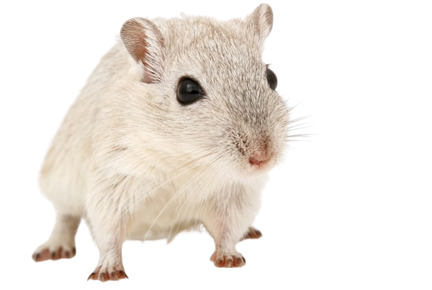

>
PÁGINA INICIAL
Importancia dos ratos:
Os animais são alguns animais considerados sinantrópicos e espécies silvestres
possuem um papel ecológico muito importante na cadeia alimentar pois,
além de realizarem o controle populacional de pequenos roedores,
eles são alimentos para muitos predadores.
Oque fazem durante o dia:
Os ratos costumam sair durante a noite para comer, fazem isso porque percebem
um movimento menor das pessoas e assim se sentem mais seguros para
vasculhar todos os cantos em busca de comida.
Porque não matar ratos:
Eles podem transmitir doenças,
como a leptospirose e a hantavirose além de ser hospedeiro da taxoplasmose.
Tendo contribuído para quase destruição Mesmo da humanidade,
com transmissão de doenças como a Peste Negra, que matou mais de 70 milhões
de pessoas durante a Idade Media, o ser humano deve muito aos ratos .